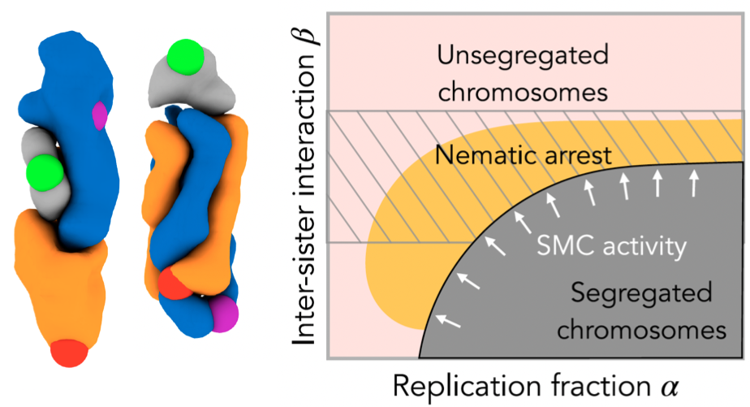
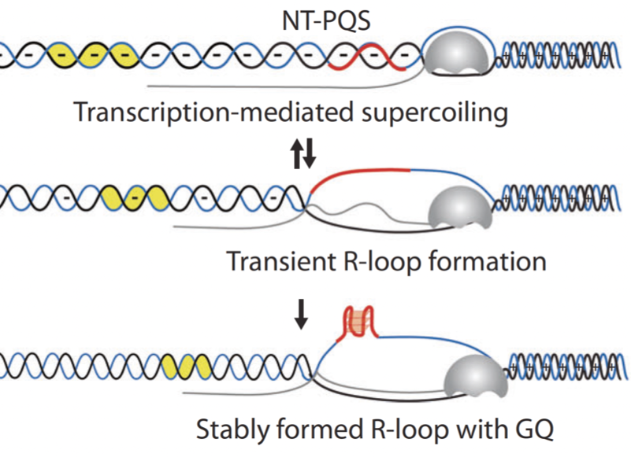
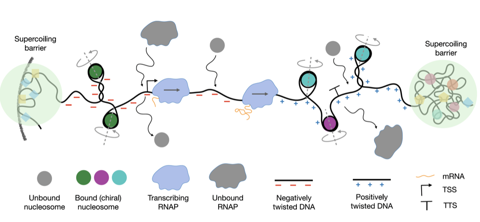
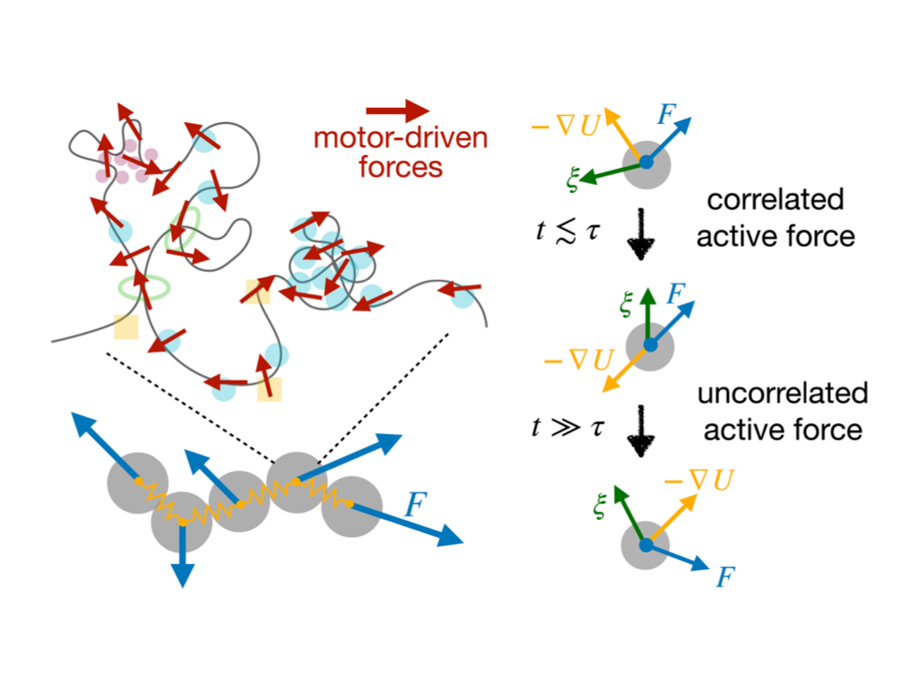
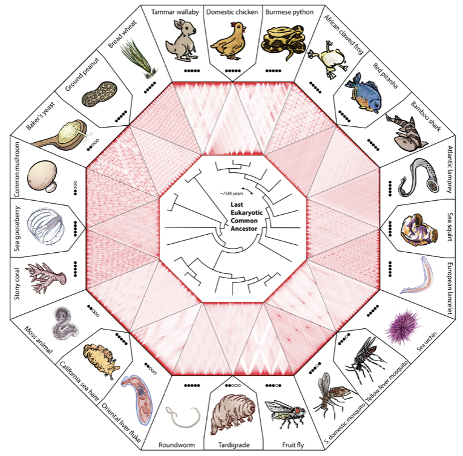

All publications
2026
›
Exploring the Energy Landscape of Bacterial Chromosome Segregation
PNAS · 2026
S. Brahmachari, A.B. Oliveira Jr., M.F. Mello, V.G. Contessoto, and J.N. Onuchic

We combine data-driven inference from Hi-C contact maps with a coarse-grained polymer energy landscape framework to model E. coli and B. subtilis chromosomes throughout their replication cycle. SMC-mediated lengthwise compaction drives a sharp mid-replication transition in which origin regions segregate toward opposite cell halves; in SMC-deficient mutants this is replaced by nematic-like alignment of sisters that impedes segregation and leaves a distinctive intersister Hi-C signature. These findings reveal that compaction geometry actively drives chromosome partition rather than merely accompanying it.@article{Brahmachari2026bact,
author = {Brahmachari, Sumitabha and Oliveira, A. B. and Mello, M. F. and Contessoto, V. G. and Onuchic, J. N.},
title = {Exploring the Energy Landscape of Bacterial Chromosome Segregation},
journal = {Proceedings of the National Academy of Sciences},
year = {2026},
doi = {10.1073/pnas.2535321123}
}
›
A Data-Driven Chromatin Model Reveals Spatial and Dynamic Features of Genome Organization
PNAS · 2026
A.B. Oliveira Jr., M.F. Mello, R.J. Oliveira, E. Dodero-Rojas, S. Brahmachari, V.G. Contessoto, and J.N. Onuchic
A data-driven chromatin model integrating machine learning with physical principles to simultaneously capture spatial organization and dynamic features of the genome across cell types.
@article{Oliveira2026,
author = {Oliveira, A. B. and Mello, M. F. and Oliveira, R. J. and Dodero-Rojas, E. and Brahmachari, S. and Contessoto, V. G. and Onuchic, J. N.},
title = {A Data-Driven Chromatin Model Reveals Spatial and Dynamic Features of Genome Organization},
journal = {Proceedings of the National Academy of Sciences},
year = {2026},
doi = {10.1073/pnas.2530583123}
}
2025
›
DNA Supercoiling-Mediated G4/R-loop Formation Tunes Transcription by Controlling the Access of RNA Polymerase
Nature Commun · 2025
J. Hwang, C.-Y. Lee, S. Brahmachari, S. Tripathi, T. Paul, H. Lee, A. Craig, T. Ha, and S. Myong

Using single-molecule fluorescence experiments and theory, we show that negative supercoiling enhances transcription frequency nearly 10-fold by facilitating RNA polymerase (RNAP) loading at the promoter. Above a threshold, this activates cooperative formation of G-quadruplex and R-loop structures near the promoter that block further RNAP loading and rapidly suppress transcription. These results identify negative DNA supercoiling as a built-in topological spring driving a transcriptional burst followed by rapid self-suppression.@article{Hwang2025,
author = {Hwang, J. and Lee, C.-Y. and Brahmachari, S. and Tripathi, S. and Paul, T. and Lee, H. and Craig, A. and Ha, T. and Myong, S.},
title = {{DNA} Supercoiling-Mediated {G4/R}-loop Formation Tunes Transcription by Controlling the Access of {RNA} Polymerase},
journal = {Nature Communications},
year = {2025},
doi = {10.1038/s41467-025-58479-x}
}
›
Energy Landscape Analysis of the Development of the Chromosome Structure Across the Cell Cycle
PNAS · 2025
V.G. Contessoto, A.B. Oliveira Jr., S. Brahmachari, P.G. Wolynes, M. Di Pierro, and J.N. Onuchic
Energy landscape theory reveals how chromosome structure evolves through cell cycle stages — from interphase to mitosis and back — by tracking how the free energy landscape reshapes under changing concentrations of architectural proteins.
@article{Contessoto2025,
author = {Contessoto, V. G. and Oliveira, A. B. and Brahmachari, S. and Wolynes, P. G. and Di Pierro, M. and Onuchic, J. N.},
title = {Energy Landscape Analysis of the Development of the Chromosome Structure Across the Cell Cycle},
journal = {Proceedings of the National Academy of Sciences},
year = {2025},
doi = {10.1073/pnas.2425225122}
}
2024
›
Nucleosomes Play a Dual Role in Regulating Transcription Dynamics
PNAS · 2024
S. Brahmachari, S. Tripathi, J.N. Onuchic, and H. Levine

We develop a statistical mechanics model of topology-constrained chromatin and find that nucleosomes reduce effective torsional stiffness through chiral structural transitions between distinct conformations. Stochastic simulations of RNAP translocation reveal a dual role for nucleosomes: steric barriers that impede RNAP motion in the gene body, yet torsional buffers whose chiral transitions lower the restoring torque and facilitate elongation. The competition between these effects produces bursting transcription dynamics whose frequency and duration are set by nucleosome density and disassembly kinetics.@article{Brahmachari2024pnas,
author = {Brahmachari, Sumitabha and Tripathi, S. and Onuchic, J. N. and Levine, H.},
title = {Nucleosomes Play a Dual Role in Regulating Transcription Dynamics},
journal = {Proceedings of the National Academy of Sciences},
year = {2024},
doi = {10.1073/pnas.2319772121}
}
›
Temporally Correlated Active Forces Drive Segregation and Enhanced Dynamics in Chromosome Polymers
PRX Life · 2024
S. Brahmachari, T. Markovich, F.C. MacKintosh, and J.N. Onuchic

We model chromosomes as polymers subject to temporally persistent (colored) noise capturing motor-driven active forces, and find that activity drives correlated motion over long length scales and compaction into a globally collapsed, entangled globule. Heterogeneous activity leads to spatial segregation of highly dynamic loci from less dynamic ones, suggesting a role for activity gradients in chromosome compartmentalization. These results show that the temporal statistics of active noise — not just its amplitude — are critical determinants of chromosome structure and dynamics.@article{Brahmachari2024prx,
author = {Brahmachari, Sumitabha and Markovich, T. and MacKintosh, F. C. and Onuchic, J. N.},
title = {Temporally Correlated Active Forces Drive Segregation and Enhanced Dynamics in Chromosome Polymers},
journal = {PRX Life},
year = {2024},
doi = {10.1103/PRXLife.2.033003}
}
2023
›
Structural Reorganization and Relaxation Dynamics of Axially Stressed Chromosomes
Biophysical Journal · 2023
B.S. Ruben, S. Brahmachari, V.G. Contessoto, R.R. Cheng, A.B. Oliveira Jr., M. Di Pierro, and J.N. Onuchic
Using a data-driven coarse-grained polymer model, we simulate axial stretching of human chromosomes and find that mitotic chromosomes are approximately 10-fold stiffer than interphase chromosomes, consistent with micromechanical measurements. Relaxation dynamics reveal that chromosomes are viscoelastic solids — liquid-like and viscous in interphase but solid-like in mitosis — with emergent stiffness arising from lengthwise compaction of chromatin loops. These results connect chromatin structural organization to the macroscopic mechanical properties of chromosomes across the cell cycle.
@article{Ruben2023,
author = {Ruben, B. S. and Brahmachari, S. and Contessoto, V. G. and Cheng, R. R. and Oliveira, A. B. and Di Pierro, M. and Onuchic, J. N.},
title = {Structural Reorganization and Relaxation Dynamics of Axially Stressed Chromosomes},
journal = {Biophysical Journal},
year = {2023},
doi = {10.1016/j.bpj.2023.03.029}
}
›
PyMEGABASE: Predicting Cell-Type-Specific Structural Annotations of Chromosomes Using the Epigenome
Journal of Molecular Biology · 2023
E. Dodero-Rojas, M.F. Mello, S. Brahmachari, A.B. Oliveira Jr., V.G. Contessoto, and J.N. Onuchic
We present a statistical-mechanical model for stretched intertwined DNA molecules computing torque and extension as a function of catenation number and applied force, finding good agreement with available experimental data. The model predicts a catenation-dependent effective twist modulus distinct from single-DNA behavior, and finds that the post-buckling state consists of multiple small plectoneme structures with a salt-dependence opposite to that of single supercoiled DNAs. These results provide a quantitative framework for interpreting magnetic tweezers experiments on DNA braids and reveal how catenation alters buckled DNA topology.
@article{DoderoRojas2023,
author = {Dodero-Rojas, E. and Mello, M. F. and Brahmachari, S. and Oliveira, A. B. and Contessoto, V. G. and Onuchic, J. N.},
title = {{PyMEGABASE}: Predicting Cell-Type-Specific Structural Annotations of Chromosomes Using the Epigenome},
journal = {Journal of Molecular Biology},
year = {2023},
doi = {10.1016/j.jmb.2023.168180}
}
2022
›
Shaping the Genome via Lengthwise Compaction, Phase Separation, and Lamina Adhesion
Nucleic Acids Research · 2022
S. Brahmachari, V.G. Contessoto, M. Di Pierro, and J.N. Onuchic
We build a coarse-grained polymer model of the genome incorporating three physically distinct interaction classes: lengthwise compaction by SMC complexes, self-adhesion among epigenetically similar segments (phase separation), and adhesion to the nuclear lamina. Their interplay is sufficient to recapitulate the full range of architectural variants observed across the tree of life, from loop-domain-dominated to compartment-dominated architectures. The model reveals how the balance between compaction and phase separation determines genome architecture type and how lamina adhesion constrains radial chromatin positioning.
@article{Brahmachari2022nar,
author = {Brahmachari, Sumitabha and Contessoto, V. G. and Di Pierro, M. and Onuchic, J. N.},
title = {Shaping the Genome via Lengthwise Compaction, Phase Separation, and Lamina Adhesion},
journal = {Nucleic Acids Research},
year = {2022},
doi = {10.1093/nar/gkac231}
}
›
DNA Supercoiling-Mediated Collective Behavior of Co-Transcribing RNA Polymerases
Nucleic Acids Research · 2022
S. Tripathi, S. Brahmachari, J.N. Onuchic, and H. Levine
We propose that co-transcribing RNA polymerases communicate through the torsional stress they generate in the shared DNA template, even when separated by large distances. Positive supercoiling generated downstream by a leading RNAP is relieved by negative supercoiling from a lagging RNAP, enabling cooperative elongation without direct contact. This supercoiling-mediated mechanism reproduces observed collective transcription behavior and predicts bursting dynamics arising from the nonlinear coupling between RNAP flux and DNA topology.
@article{Tripathi2022,
author = {Tripathi, S. and Brahmachari, S. and Onuchic, J. N. and Levine, H.},
title = {{DNA} Supercoiling-Mediated Collective Behavior of Co-Transcribing {RNA} Polymerases},
journal = {Nucleic Acids Research},
year = {2022},
doi = {10.1093/nar/gkab1252}
}
2021
›
3D Genomics Across the Tree of Life Reveals Condensin II as a Determinant of Architecture Type
Science · 2021
C. Hoencamp*, A.M.O. Elbatsh*, O. Dudchenko*, S. Brahmachari*, et al.

We generated Hi-C contact maps for 24 species spanning the tree of life, revealing that genomes fall into two broad architectural categories: loop-domain-dominated and compartment-dominated. Comparative genomics and functional perturbation experiments identify condensin II as the principal molecular determinant: species with condensin II form loop domains, while those lacking it are compartment-dominated. Depletion or introduction of condensin II shifts genome architecture accordingly, revealing a deep evolutionary link between condensin II, loop extrusion, and fundamental genome organization.@article{Hoencamp2021,
author = {Hoencamp, C. and Elbatsh, A. M. O. and Dudchenko, O. and Brahmachari, S. and others},
title = {{3D} Genomics Across the Tree of Life Reveals Condensin {II} as a Determinant of Architecture Type},
journal = {Science},
year = {2021},
doi = {10.1126/science.abe2218}
}
2020
›
Coarse-Grained Modeling of DNA Plectoneme Formation in the Presence of Base-Pair Mismatches
Nucleic Acids Research · 2020
P.R. Desai, S. Brahmachari, J.F. Marko, S. Das, and K.C. Neuman
We use coarse-grained molecular dynamics simulations to study plectoneme pinning at base-pair mismatch sites in supercoiled DNA. Even a single mismatched base pair acts as a soft mechanical defect that dramatically lowers the energy required to nucleate a kinked end-loop, pinning a plectoneme at that site, in quantitative agreement with magnetic tweezers experiments. These results provide a physical mechanism by which DNA supercoiling localizes to sites of damage, with implications for topological contributions to genome surveillance.
@article{Desai2020,
author = {Desai, P. R. and Brahmachari, S. and Marko, J. F. and Das, S. and Neuman, K. C.},
title = {Coarse-Grained Modeling of {DNA} Plectoneme Formation in the Presence of Base-Pair Mismatches},
journal = {Nucleic Acids Research},
year = {2020},
doi = {10.1093/nar/gkaa836}
}
2019
›
Chromosome Disentanglement Driven Via Optimal Compaction of Loop-Extruded Brush Structures
PNAS · 2019
S. Brahmachari and J.F. Marko
We analyze a model in which type-II topoisomerase permits topology fluctuations between sister chromosomes modeled as polymer loop arrays, where SMC-driven loop extrusion controls compaction. Interchromosome entanglements are minimized at an optimal loop size — too few loops leave chromosomes entangled, too many create new ones — defining an optimal compaction level for disentanglement. This optimal loop size corresponds to those observed in mitotic chromosomes, establishing a physical link between compaction geometry and topological disentanglement.
@article{Brahmachari2019,
author = {Brahmachari, Sumitabha and Marko, J. F.},
title = {Chromosome Disentanglement Driven Via Optimal Compaction of Loop-Extruded Brush Structures},
journal = {Proceedings of the National Academy of Sciences},
year = {2019},
doi = {10.1073/pnas.1906355116}
}
2018
›
Defect-Facilitated Buckling in Supercoiled Double-Helix DNAs
Physical Review E · 2018
S. Brahmachari, A. Dittmore, Y. Takagi, K.C. Neuman, and J.F. Marko
We develop a statistical-mechanical model for stretched, twisted DNA and find that an immobile point defect pins a plectoneme domain by nucleating a kinked end-loop, with a single unpaired base lowering the bending energy by approximately 0.7 kBT. The model predicts two distinct buckling signatures — buckling and rebuckling — in supercoiled DNA with a base-unpaired region, in quantitative agreement with magnetic tweezers experiments. These results explain how sequence anomalies become preferred sites of DNA plectoneme formation.
@article{Brahmachari2018pre,
author = {Brahmachari, Sumitabha and Dittmore, A. and Takagi, Y. and Neuman, K. C. and Marko, J. F.},
title = {Defect-Facilitated Buckling in Supercoiled Double-Helix {DNAs}},
journal = {Physical Review E},
year = {2018},
doi = {10.1103/PhysRevE.97.022416}
}
›
DNA Mechanics and Topology
Book chapter · 2018
S. Brahmachari and J.F. Marko · Biomechanics in Oncology, Springer
This review covers the physical mechanics of DNA — bending, twisting, and stretching — as revealed by single-molecule experiments interpreted through polymer statistical mechanics. We discuss how topological constraints including supercoiling and entanglement shape biological processes, and how DNA-binding proteins and compaction machinery alter effective chromatin mechanics. The chapter concludes by connecting these physical properties to cancer biology, including the mechanical consequences of mutations and the role of topological stress in cancer cell function.
@incollection{Brahmachari2018springer,
author = {Brahmachari, Sumitabha and Marko, J. F.},
title = {{DNA} Mechanics and Topology},
booktitle = {Biomechanics in Oncology},
publisher = {Springer},
year = {2018},
doi = {10.1007/978-3-319-95294-9_2}
}
2017
›
Nucleation of Multiple Buckled Structures in Intertwined DNA Double Helices
Physical Review Letters · 2017
S. Brahmachari*, K.H. Gunn*, R.D. Giuntoli, A. Mondragon, and J.F. Marko
Using magnetic tweezers on DNA braids, we find that torsionally stressed braids supercoil through an abrupt buckling transition and that the buckled state is characterized by a proliferation of multiple plectoneme domains — qualitatively distinct from the behavior of supercoiled single DNAs. We attribute these differences to the increased structural bulkiness of braided DNA, which alters the energetics of plectoneme nucleation and growth, and a statistical-mechanical model captures all observed features. These results reveal how the mechanical properties of intertwined DNA structures differ fundamentally from individual double helices.
@article{Brahmachari2017prl,
author = {Brahmachari, Sumitabha and Gunn, K. H. and Giuntoli, R. D. and Mondragon, A. and Marko, J. F.},
title = {Nucleation of Multiple Buckled Structures in Intertwined {DNA} Double Helices},
journal = {Physical Review Letters},
year = {2017},
doi = {10.1103/PhysRevLett.119.188103}
}
›
Supercoiling Locates Mismatches
Physical Review Letters · 2017
A. Dittmore, S. Brahmachari, Y. Takagi, J.F. Marko, and K.C. Neuman
Using magnetic tweezers, we show that imposed supercoiling detects base-pair mismatches with sensitivity to a single mismatched base pair in a molecule of several thousand base pairs. Under conditions of high salt and moderate tension, a single plectoneme nucleates and is stably pinned at the mismatch; from extension measurements and statistical-mechanical calculations we estimate the pinning energy and extrapolate to physiological conditions. These results suggest that DNA supercoiling could contribute to mismatch and damage sensing in vivo.
@article{Dittmore2017,
author = {Dittmore, A. and Brahmachari, S. and Takagi, Y. and Marko, J. F. and Neuman, K. C.},
title = {Supercoiling Locates Mismatches},
journal = {Physical Review Letters},
year = {2017},
doi = {10.1103/PhysRevLett.119.147801}
}
›
Torque and Buckling in Stretched Intertwined Double-Helix DNAs
Physical Review E · 2017
S. Brahmachari and J.F. Marko
We present a statistical-mechanical model for stretched intertwined DNA molecules computing torque and extension as a function of catenation number and applied force, finding good agreement with available experimental data. The model predicts a catenation-dependent effective twist modulus distinct from single-DNA behavior, and finds that the post-buckling state consists of multiple small plectoneme structures with a salt-dependence opposite to that of single supercoiled DNAs. These results provide a quantitative framework for interpreting magnetic tweezers experiments on DNA braids and reveal how catenation alters buckled DNA topology.
@article{Brahmachari2017pre,
author = {Brahmachari, Sumitabha and Marko, J. F.},
title = {Torque and Buckling in Stretched Intertwined Double-Helix {DNAs}},
journal = {Physical Review E},
year = {2017},
doi = {10.1103/PhysRevE.95.052401}
}